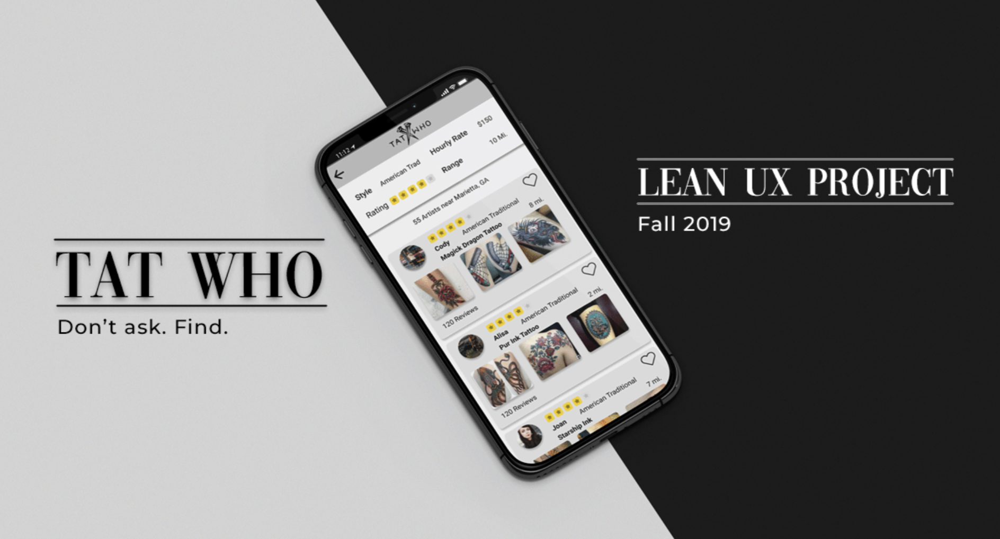

TatWho
Lean UX Design Project

Role:
Project Timeline:
Interaction Designer
6 Weeks (October - December 2019)
| Role: | Project Timeline: |
|---|---|
| Interaction Designer | 6 Weeks (October - December 2019) |
Premise
For my Interaction Design II class project, my group sought out to create a mobile app to give a solution to a real life problem:
People want tattoos, but do not know where to go to get one.
The culture behind tattoos is not
well known to those wanting to get their first tattoo. We wanted to design an app that would help our
users not only find tattoo artists but also provide relevant information such as artist hourly rates,
location, the style the artist specializes in, and user ratings.
Meet Our Team
|
|
||
|---|---|---|
| Joey Spreha | Uchenna Uzuegbunam | Brian Ra |
| UX/UI Designer | UX/UI Designer | Team Lead |
Sprint 1: And so we begin
On October 1st, 2019, we started the first sprint. We focused on identifying our users and how our product could benefit them as well as meet business needs. We also wanted to determine if the functions we came up with as a team were actual solutions to their problems. Usually in Lean UX, you would not do three week cycles, but for the sake of the assignment and our constraints, we were afforded an extra week (design week 0) to focus on three main objectives:
- Create a Problem Statement: (what issue are we addressing, what solution are we proposing, how does this solution differ from competitors)
- Assumptions (who will our user be and why would they want to use our product).
- Hypothesize (create a product backlog to look back on throughout each sprint.
New Product Statement
"The current state of the app has focused primarily on finding tattoo artists that users goals. What existing products/services fail to address is Instagram and other social media platforms, there are none that are used explicitly to find a tattoo artist. Our product/service will address this gap by providing a filtered search engine for users to find artists that fit their ideas (Style, price, etc.). Our initial focus will be users without tattoos that want them but do not know where to find an artist."
Assumptions
Once we got a general understanding of the scope of the app, we moved onto affinity mapping our assumptions onto a whiteboard.
Affinity mapping allowed us to group our assumptions into categories easily.
The advantage of affinity mapping in Lean UX is that it forces you to "idea dump" everything you think might be relevant to your product, which can in turn inspire other group members. It allows for quick organization which is especially useful when you are dealing with over a hundred sticky notes.
Hypothesis (Product Backlog)
While organizing our sticky notes from affinity mapping, we focused on categorizing them by the following:
- Business Outcomes: How is our product going to generate income?
- Proto-Persona: Artificially created representation of real users.
- User Outcomes: Proto-persona's desires and goals, what are the proto-personas are expecting to get out of using our product.
- Features: What features will be implemented to achieve business/user outcomes.
As a group, we drafted individually to create two proto-personas: a user wanting tattoos and a tattoo artist. We shared our ideas then created our "final" proto-persona together. Proto-personas would change as we validated your assumptions through research and testing in the upcoming weeks.
Our Proto-Personas
Our personas were created with the research we gathered in mind first. We wanted to keep everything as realistic as possible in order to create user stories using our personas.
Jenn
- 22 year old college student from the metro Atlanta area
- Wants a reasonably priced, meaningful tattoo
- Wants to find a specialized artist that does the style of work she wants
Goal:
Wants a high quality tattoo that is reasonably priced, but does not know much about the industry or where to begin looking for artists.
Cody
- Tattoo artist from the metro Atlanta area
- Wants to find more clients that want tattoos done in the style he specializes in
- Wants a better way to get more clients other than existing social media options
Goal:
Cody wants to tattoo people who like his work specifically while seeing his reach.
We used the following template to create hypothesis statements which would then be refined and become our product backlog (document containing list of hypothesis statements, serves as a reference to look back on throughout the each sprint).
We believe that we will achieve [business outcome] if [proto-persona] can achieve [user outcome] using [feature].
Sprint 1: Low Fidelity Prototyping
Each member individually created their own mockup of functions/screens we decided to prioritize this sprint (search function, search results screen, profile page). We shared our ideas, decided on what we liked/disliked from each page, and created a version as a team.
Low Fidelity paper prototype sketched out by all team members
As a group, we quickly realized that we We only had 2 days to prototype before our first batch of user tests, we figured we would focus on what we assumed were the main features. We reprioritized our sprint 1 backlog as such:
User Expectations & Needs: App Features
- Search Screen
- Results Page
- Artist Profile
We took influence from existing apps such as Yelp (for search/results screen) and Instagram for the artist profile. Using existing design choices that people are familiar with was a big focus of our group. We assumed that even though our idea was not a common one, we could still utilize common UX/UI design choices to create a familiar, and comfortable environment
User Testing Round 1
One of my primary tasks as team leader was recruiting 3 users each week. We wanted to test people who were:
- between the age range of 18-25
- either have tattoos or are interested in getting them.
(We also had to keep in mind that we needed to test both users as well as tattoo artists to truly test the full scope of our app.)
I used social media (Instagram and Snapchat) to reach out to people who would be interested. I screened each participant before the official test to avoid bringing in users that did not meet our requirements.
Users tested the paper prototype during the first week of Sprint 1
Both users gave us great feedback, pointing out some issues they had with our product. This included the way we chose to display pricing on the search screen. They also wanted actual reviews not just stars (which made sense since they both seemed to get their recommendations from word of mouth).
Finding a Tattoo Artist
Early into our process, we realized that we could not make a tattoo artist finder mobile application without first going to an actual tattoo artist. We recruited Julia, a friend of mine, who had been tattooing for about 2 years now. Having Julia for user testing was great because we now had someone knowledgeable who could test our functions intended for tattoo artists.
Due to constraints with time and availability, all our interactions with Julia (artist) had to be done over video conference.
Julia gave us feedback on our profile page, ideas on what we could add such as styles artists avoided, where artists are located, and options for them to add images of their own designs (flash prints).
Medium Fidelity Prototyping and User Testing Round 2
Based on user feedback, we made changes to problem areas (profile page information) and transitioned to Figma to begin our medium fidelity prototype.
Medium Fidelity Prototype: search, results, and profile screen.
Like last week, we had only two days to prototype before it was time to user test again. Due to our time restrictions, we opted to use this second round of testing as a chance to focus more on the navigation as well as performing primary tasks (filtering for an artist, looking thru the results, finding their page).
Medium Fidelity Prototype: search, results, and profile screen.
The users were asked to explore the app as they pleased (keeping in mind not every feature was built to function).
Both Luke and Meghan were able to navigate through the app. They understood the app's purpose and did not feel
anything was out of place except for the pricing function, which still needed work.
We also had another video conference with Julia who gave us further feedback now that the
prototype was on a screen. She suggested more options in terms of visual design as well as the size of the
bio on the profile screen.
Sprint 2: Reprioritizing
We began Sprint 2 at the beginning of November by looking back on our product backlog, and seeing where changes needed to be made based on our feedback from user testing.
Our team added the following features to our sprint backlog:
- Home Screen
- Analytics Screen
- Large Image view (profile page)
- Review Section
Medium Fidelity Prototyping (Reiterating)
We got together and individually sketched our ideas of how the pages and functions should look. Unlike last the sprint, we jumped straight into prototyping on Figma instead of having our users test on paper again.
Medium Fidelity Prototype: artist profile, profile editor, analytics screen artist view).
User Testing Round 3
This Sprint, we really wanted to focus on 2 things:
- How can we keep our users engaged/increase return rates?
- What information would an artist expect to be presented on an analytics page?
We got together and individually sketched our ideas of how the pages and functions should look. Unlike last the sprint, we jumped straight into prototyping on Figma instead of having our users test on paper again.
Medium Fidelity Prototype: search, results, and profile screen.
For this round of user testing, we could not get Julia to test because of scheduling complications so we had to settle with testing 3 users. All three users gave great feedback and found the navigation made sense. Our change to pricing and distance were also well received. However, we found issues with our home screen and the information it presented. Some users were confused by the wording; others wanted something more along the lines of an "artist of the week" so they could have a reason to be invested in using our app. We also found users did not want to have to go through the filter option every time they wanted to look for an artist.
Sprint 2: Final Testing
With our last week of Sprint 2, we ran into complications finding participants. Ultimately, Meghan and Julia (artist) was asked be tested again, for she seemed to not only match our proto-persona well, but she also had a lot of great feedback to give.
Revised artist profile and enlarged photo viewer
Updated analytics page for artists
Ultimately, due to time constraints this sprint, we as a team, felt that we were not able to fully flush out the artist profile and analytics screen. We also could not find another tattoo artist, so Julia has seen the project grow.
Her continued involvement could have added some biases. Overall, Julia seemed happy about the "add boards" option.
She stressed that an artist's ideal experience if when a client picks something from their flash (portfolio). Having an option to add their flash to one collection made her happy, so we felt that we were coming to a real solution.
Project Takeaways
During our user-testing sessions, we were often asked this question:
"Is this something you are actually going to make?"
This interest from the test users alongside their generally positive reactions to our product, gave us hope that we were along the right track to finding a legitimate solution to this issue. Through our user testing, we validated that the desire of getting a tattoo, but not knowing where to get one is a problem people face. We also determined that an app such as ours provided a good solution to this problem.